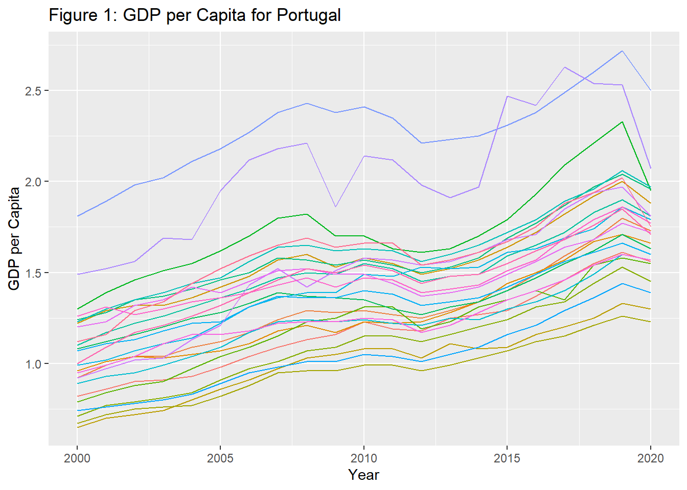
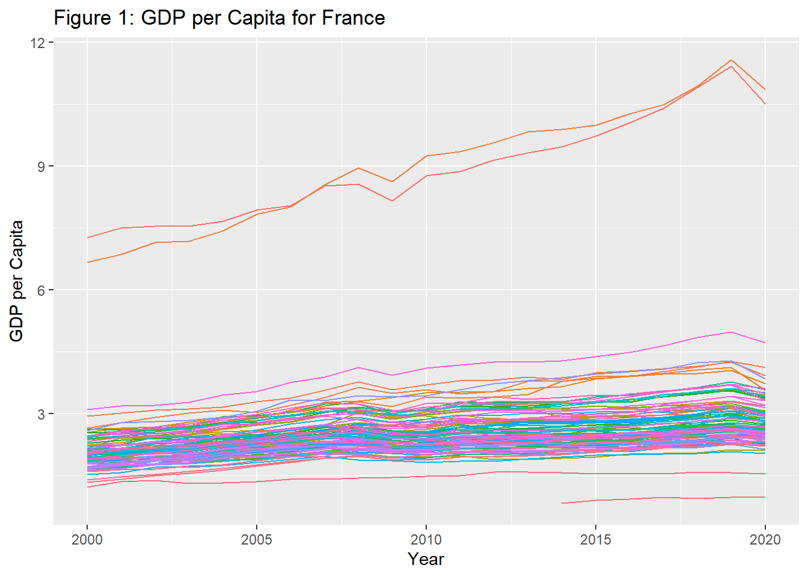
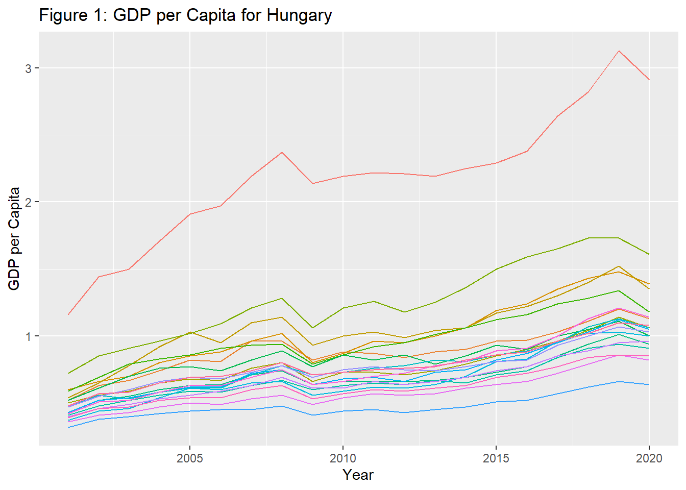
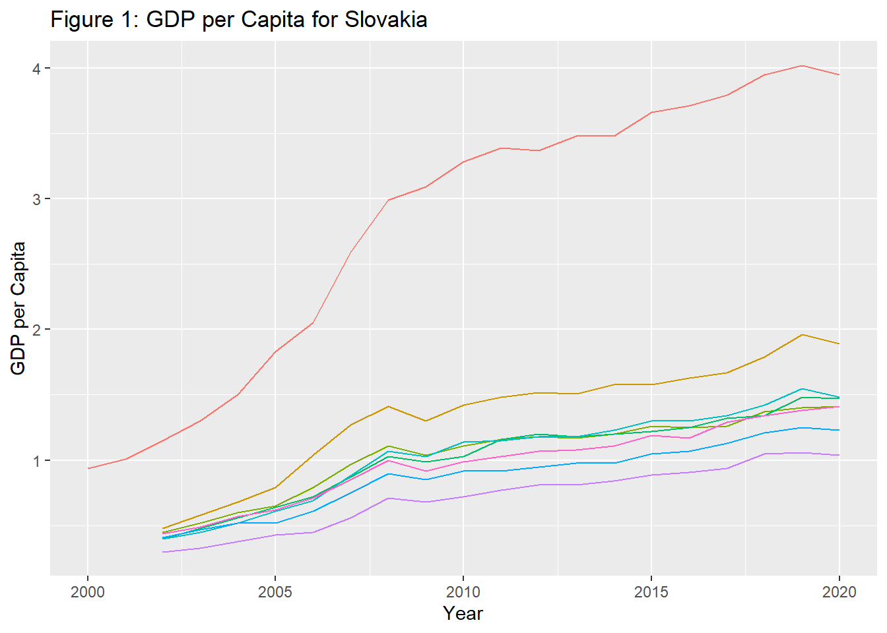
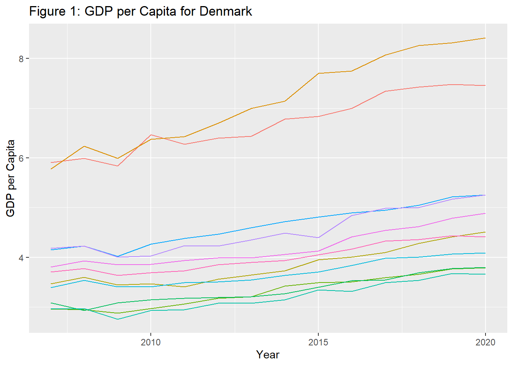
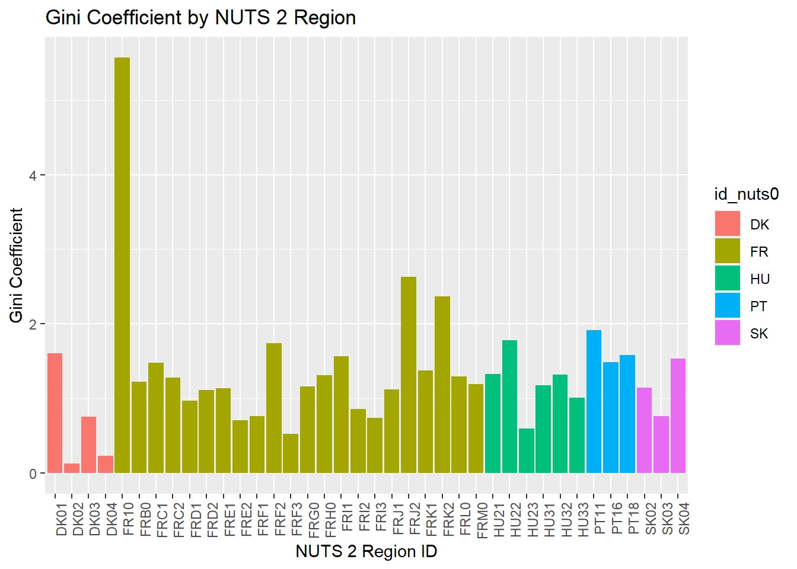
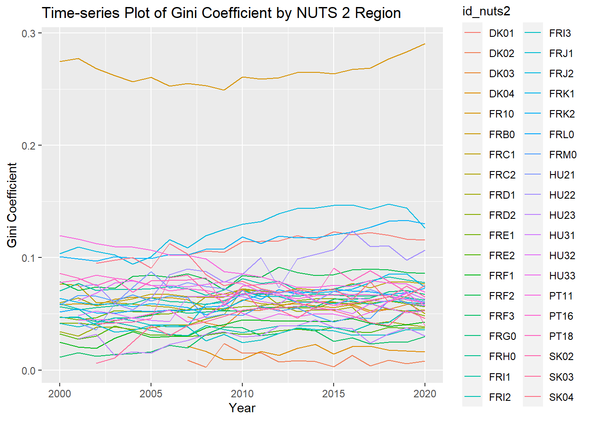
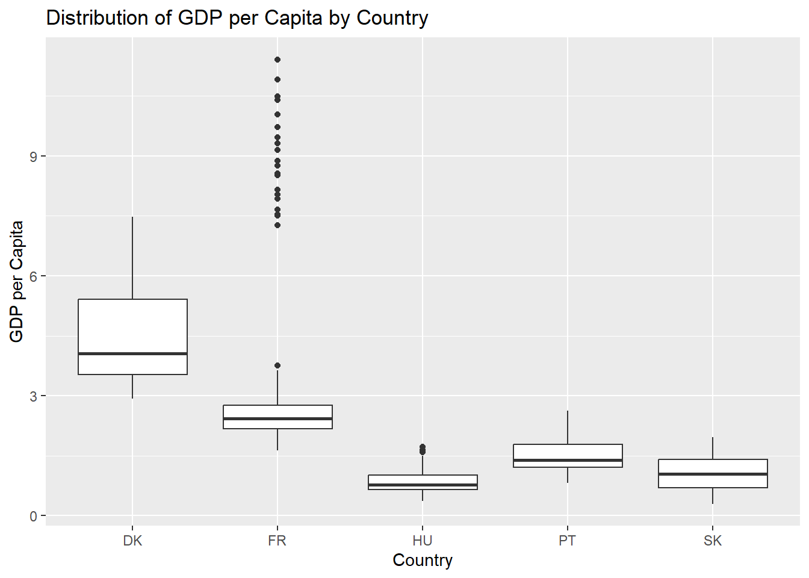

title: ‘Regional Inequalities and economic growth; cross section and times series analysis’ author: ‘Anine Therese Karlsen & Mona Lisa Jones’ abstract: ‘This assignment aims to acquire, process, and analyze sub-national GDP and population data for a subset of European countries. Firstly (assignment 1), Calculateing GDP per capita and exploreing regional inequity using various descriptive statistics and visualizations.Secondly (assignment 2), examining the relationship between regional development and inequality, employing cross sectional estimation techniques for the year 2010.’’ editor: visual bibliography: [Regional_inequality_23.bib, econometrics.bib] page-layout: full number-sections: true papersize: a4 output: pdf_document: default
Introduction
While national GDP and GDP per capita are vital indicators of a country’s aggregate economic health, they do not shed light on how wealth or income is distributed among its residents. A high national GDP can, paradoxically, coexist with pockets of regional deprivation [@lessmann2017].
The truth of this statement becomes more evident when taking a closer look at sub-national data. Regional wealth disparities are of prime concern, especially when crafting policies for equitable growth [@lessmann2017]. A country’s macro-level prosperity does not automatically guarantee that all its regions partake equally in this wealth. By studying smaller regions within a country, it is possible to get a more nuanced narrative about the state of regional economic disparities [@lessmann2017].
Using time series data and cross-sectional observations we investigate Economic growth and Inequality trends in Portugal, France, Hungary, Slovenia and Denmark in the time period 2000 to 2020. The aims are to acquire, process, and analyse sub-national GDP, GINI and population data for a subset of European countries.
The primary objective is to gain knowledge of econometric methods used for science in business through our given topic. Subsequently, econometric terms and definitions are explained in greater detail than it normally would in similar papers. Using GDP per capita and the Gini coefficient. Moreover, both are vital indicators in the field of economics and are frequently used, in a wide array of studies. Furthermore, to analyse and interpret the economic conditions and social disparities of different regions or countries. Their analysis provides crucial insights for policymakers, economists, and researchers in shaping and evaluating the effectiveness of socio-economic policies.
The research question “What are the regional economic growth and inequality measurements from 2000 to 2020, in selected European countries and how does other determinants affect the results?“ is key in guiding our study. Setting a solid foundation for a comprehensive study that not only measure our given parameters, but also a critically examination of the role of determinants such as transportation infrastructure and education. @lessmann2017 states that transportation costs play an important role in agglomeration and income, and reduced transportation costs as a determinant of regional inequality.
The sructure of our study is methodically designed to facilitate this exploration. In part 1A and B we calculate GDP per capita and explore regional inequality using various descriptive statistics and visualizations such as panel data (Assignment_1).
In part 2A and B we use cross sectional method to examine the relationship between regional development and inequality, employing cross sectional estimation techniques for the year 2010 (Assignment_2).
Lastly, potential limitations may arise due to the use of ChatGPT and ChatGPT PDF, which have been utilized as tools to gain understanding and extract knowledge from academic papers, as well as to explain econometric terms and definitions. The text generated by these tools has been cross-checked to the best of our knowledge with our textbook and Andre Seidel, lecturer and author of ‘Regional Inequality, Convergence, and Its Determinants – A View from Outer Space’ (2017). Despite these precautions, there may have been instances where incorrect information was provided, and some errors could have been overlooked. The text has been meticulously rewritten to fit our style of writing, ensuring consistency and accuracy throughout our study.
Literature Review: Regional Economic Growth, Inequality and determines (2000-2020)
Why some places grow and prosper is a fundamental question in social science research. This question motivated Adam Smith’s work, An Inquiry into the Nature and Causes of the Wealth of Nations, (Smith 1863) and has been a major influence of the new economic geography [@feldman2014]. Furthermore, regional growth and inequality have been important topics of research in Europe for many years. In recent decades, the European Union has implemented policies aimed at reducing regional disparities and promoting economic growth across its member states. Furthermore, despite these efforts, significant disparities in income and economic development persist across regions in Europe [@lessmann2017].
Economic Growth and Regional Disparities
Regional growth in Europe exhibits a complex pattern, influenced significantly by factors such as geography, human capital, and economic policies. Lessmann and Seidel’s research offers insights into these dynamics, highlighting the persistence of income disparities, across regions despite overarching economic advancement [@lessmann2017]. Wealthier nations like Denmark tend to experience quicker regional convergence, a phenomenon supported by Gennaioli et al.’s findings [@gennaioli2014]. However, this is not uniformly experienced across all European countries, with Eastern European nations such as Hungary and Slovakia we may expect different growth trajectories, particularly after their EU accession.
Financial crisis, and EU membership for Slovakia and Hungary
The 2008 financial crisis significantly disrupted regional growth and exacerbated income inequalities across Europe. Nguyen et al. highlight that financial turmoil typically leads to increased income disparity; a trend observed globally [@nguyen2022].
Focusing on Europe, we expect varied regional economic performances, especially when comparing Eastern European countries such as Hungary and Slovakia to their Western counterparts. Given the role of capital market regulations in promoting regional convergence, outlined by Gennaioli et al., we anticipate a potential growth acceleration. In particular for Eastern European countries following their EU accession in 2003 and 2004 [@gennaioli2014]. However, the financial crisis and subsequent labour market shifts may also have influenced these trends.
EU membership provided Slovakia and Hungary with resources for economic recovery, while Western European countries, including Denmark, Portugal, and France, likely experienced significant economic declines due to the financial crisis, a pattern possibly mirrored in the recent COVID-19 pandemic. These complexities highlight the importance of a detailed analysis to understand regional economic growth and inequality in challenging times.
Regional inequality
Another affect that surprised us was that the economic crisis led to increase inequality. The study “the effects of financial crisis on regional inequality” indicate any type of financial crisis results in higher income inequality [@nguyen2022].
@lessmann2017 regional inequality study address the importance of studying regional inequality. Its potential consequences, such as political tensions that can undermine social and political stability [@lessmann2017]. The paper also discusses the relationship between regional inequality and personal income inequality and conflict risk.
Determinants of regional inequality
Geographic characteristics stand out as pivotal, with the natural and topographical elements of a region significantly swaying income distributions [@lessmann2017].
Urbanization emerges as a crucial determinant, where bustling, populous around urban centres usually enjoy elevated income levels, contrasting starkly with the often-stark disparities witnessed in more rural and secluded areas [@lessmann2017].
Transport infrastructure and Education
Transport infrastructure plays a central role in shaping regional economic landscapes. Improved connectivity fosters economic activities, reduces travel time, and enhances accessibility to markets and resources. Studies indicates that regions with robust transport infrastructure tend to attract more investments, generate employment, and ultimately contribute to regional prosperity.
[@lessmann2017] discusses the determinant of Education in the context of human capital. The study mentions that human capital is the most important determinant of differences in regional development within countries. The study also notes that human capital creates positive externalities, which can spill over regional boundaries. Moreover, the quality of human capital within countries, as measured by the secondary-school enrolment rate, can decrease regional inequality by facilitating regional spillovers and convergence. Lastly, promoting internal migration.
Expected Inverted U- and N shaped curves
Furthermore, [@lessmann2017] provides us with insights into the inverted U-shaped relationship between regional inequality and the level of economic development in different country groups [@lessmann2017]. The inverted U-shape also referred to as Kuznets Curve suggests that as an economy develops, regional inequality initially rises, reaches a peak, and then starts to decline.
@lessmann2017 paper also finds that there is an N-shaped relationship between regional inequality and economic development, which means that regional inequality increases again after the inverted U-shaped pattern has been completed [@lessmann2017].
@iammarino2019 discusses regional inequalities in European countries. It presents evidence that inter-regional inequality has been increasing in the European Union since the turn of the millennium. The authors argue that this is due to the existence of several groups of regional economies in Europe that are structurally very different from one another [@iammarino2019]. Additionally, the authors argue that there are some countries in the EU that are more evenly developed than others, and that a map of underperformance or over-performance means less in a high-income but evenly developed country, such as in Denmark in our case [@iammarino2019]. On the other hand, France has been a subject of discussion and policy making for many years, regarding its well-known pockets of extreme wealth in regions such as Cap d’Antibes.
Overall, it is evident that regional economic growth and inequality in Europe from 2000 to 2020 have been influenced by a constellation of factors, with transport infrastructure and education emerging as significant determinants. Earlier studies provide us with a fundamental understanding of these dynamics, while also highlighting the nuanced impacts of economic crises on regional disparities. The integration of transport infrastructure and education into this discourse adds an additional layer of complexity, underscoring its potential as a catalyst for regional development and equality.
Data
Trough Eurostat, we download the datasets nama_10r_3gdp , demo_r_pjanggr3, demo_r_mlifexp, tran_r_net and edat_lfse_04 as csv files and filted the data by our preferences before downloading it. Furthermore, we filtered the dataset by choosing the years 2000 to 2020. Then, we selected the NUTS requiered levels region for Portugal, France, Hungary, Slovakia and Denmark. Finally, we specified the data to be in million Euro.
GDP
The GDP dataset provides insights into GDP at regional level using the NUTS classification system. It furnishes GDP values in both current prices and adjusted for inflation, with figures given in purchasing power standards (PPS) to account for price level differences between countries. The data is mostly structured by year and region @database.
The GDP at market prices represents the final result of production activities of resident producer units within a region or nation. It is calculated as the sum of the gross value added across various institutional sectors or industries. Furthermore, augmented by taxes and reduced by subsidies on products (which are not allocated to specific sectors or industries) @database. This also balances out in the total economy production account. In terms of methodology, while national accounts compile GDP from the expenditure side, regional accounts don’t adopt this approach due to the complexities of accurately mapping inter-regional flows of goods and services.
The different measures for the regional GDP are absolute figures in € and Purchasing Power Standards (PPS), figures per inhabitant and relative data compared to the EU Member States average @database.
Population
Eurostat’s records annual population data with NUTS classification. Our dataset includes information on births, deaths, net migration, and may also include demographic information on age and gender. Displayed in a year-by-region format, with yearly interval updates @database.
Eurostat’s primary source for yearly demographic data at the regional level stems from the Unified Demography (Unidemo) project. The project covers 37 countries and is the central repository for demographic and migration-related data @database. As well as, specific metrics gathered under UNIDEMO encompass population counts at the close of the calendar year and events such as births and deaths occurring within that year @database. Additionally, data on marriages, divorces, and migration flows are recorded .
For the purpose of this research, the demographic data references the NUTS 2016 classification, which provides a detailed breakdown of the European Union’s territory @database.
Demographic (Nuts 2)
Statistics on population change (demo_r_mlifexp) and on population structure was collected from Euro Stat [@database]. Used to monitor demographic behavior within political, economic, social and cultural contexts at NUTS 2 level. Same policy and demographic classifications as previous population data set applies.
Transportation Infrastructure (Nuts 2)
This data-set (tran_r_net) presents recent data on the inland transport network of the European Union (EU), EFTA and candidate countries presenting motorways, railways and inland waterways [@database]. Furthermore used as a varable of of interest (MLR) in our section growth and inequality. Moreover, to excamine if evolution of the transport network is closely linked to the general development of the economy.
The collected data are compiled by the competent national authorities. Reported annually be the National Statistical Office, the Civil Aviation Authorities (air transport), the Ministry of Transport (inland waterways, railway and road networks, victims), and the National Maritime Administration (maritime transport) [@database].
Education (Nuts 2)
This data set (edat_lfse_04) contains population by educational attainment level, sex and NUTS 2 regions (%). Including data on the highest level of education successfully completed by the individuals of a given population. Furthermore, data on young people neither in employment nor in education and training – NEET, early leavers from education and training and the labour status of young people by years since completion of highest level of education. Calculated as annual averages of quarterly EU Labour Force Survey data (EU-LFS).
NUTS classification
The Nomenclature of Territorial Units for Statistics (NUTS) offers a stratified system to segment the economic territory of the EU and UK to facilitate the consistent collection and harmonization of regional statistics across Europe. The NUTS regions range from NUTS 0 Country level to NUTS 3 small units such as municipalities level @eurostat2023a.
Econometric Approach
In this part we will report and interpret different types of essential descriptive statistics. Measuring regional income inequality is challenging due to heterogeneity of regions [@lessmann2017]. The number of regions in our data set varies largely in size and population. Since the focus of this paper is purely growth and changes in inequities over time, the variations of size and population density becomes a minor issue because the country-level territorial heterogeneity is fixed [@lessmann2017].
“Interest in income inequality has led to the development of several ways of measuring it. Two types of measures are of interest in this paper—-static and dynamic. Static measures provide a snapshot (cross sectional) of these inequalities at a point of time whereas the dynamic measures capture historical trends (Paneldata).” [@wooldridge2020]
By using figures, we can visualize the GDP per capita, and look at how it varies among the different regions. In these figures, a line represent one NUTS 3 region.
Descriptive statistics
Mean
We calculate the mean to provide a representative value for the dataset, facilitating understanding of its central tendency and serving as a benchmark against which deviations and anomalies can be assessed, in later steps when building and interpreting regression models [@wooldridge2020].
MMR
Comparing the GRDP (gross regional domestic product) per capita of the region with the highest income to the region with the lowest income (minimum per capita GRDP) provides a measure of the range of these disparities. If this measure is small (close to 1), then it would mean that the different regions have relatively equal incomes [@wooldridge2020]. If this measure is large, then the interpretation is more problematic, as it does not tell us if the high ratio is due to substantial variation in the distribution of per capita GDRPs or the presence of outliers. Nevertheless, maximum to minimum ratio (MMR) provides a quick, easy to comprehend, and politically powerful measure of regional income inequality.
Standard diviation (SD)
Calculating SD to quantify the dispersion or variability of a data set around its mean. Helping us assess the degree of uncertainty, variability, or risk associated with an economic variable or parameter, which is crucial for understanding the reliability of estimations and predictions [@wooldridge2020].
Median
The median serves as a robust measure of central tendency, especially when a dataset may have outliers or is skewed. Unlike the mean, the median is not influenced by extreme values and, thus, can provide a clearer picture of the “typical” value in situations where the data distribution is not symmetrical [@wooldridge2020].
Time series (Panel data)
Cross sectional analysis
Simple linear regression
Multiple linear regression
Part 1A: Sub-national GDP and GDP per Capita
GDP per Capita Calculation
The formula for calculating GDP per Capita is as follows:
\(y_i=GDP_i/population_i\)
After calculating the GDP per capita for all NUTS 3 regions within the chosen countries, we can see that there is a large spread between the figures for the various regions. We want to look at regional inequity; in order to do this in a valuable way, countries are divide. Furthermore, gaining important insights on regional differences and utilize. Later to discuss national policy on equity and sustainable economic development in regions.
GDP per capita Portugal
GDP_per_capita
mean 1.4185524
median 1.3900000
std_dev 0.3702905
minimum 0.6500000
maximum 2.7200000By looking at figure for Portugal, we can see that the GDP per capita in Portugal’s regions appears to be fairly consistent. There is however some regional variability. We can see signs of urbanisazation where the regions around the big cities like Lisbon have a higher GDP per capita compared to some more rural areas. Since Lisbon is the capital of Portugal, there is probably a higher concentration of industries, making it a economic center (which again makes the GDP per capita higher).
To continue, we can see that the mean is a little higher that the median, something that might indicate that regions like Lisbon are pulling up the average. If we compare the standard derivation for Portugal with the other countries, we’ll see that is fairly low in comparison. This might mean that there is not a lot of variability between the GDP per capita across different regions in Portugal. The gap between minimum and maximum is also low compared to other countries, something that’ll also show us that the economic disparity in Portugal might not be as high as it is in other countries.
GDP per capita France

GDP_per_capita
mean 2.630444
median 2.440000
std_dev 1.053767
minimum 0.830000
maximum 11.580000When looking at the figure for France, we see some regions have a much higher GDP per capita compared to the other regions. The regions with the highest GDP per capita for all years is the île-de-France region, one that also includes Paris. This significant difference between the regions with the highest GDP per capita and the lowest, shows us that there is a high concentration of economic activity and wealth in a few urban regions. Similar to Portugal, we see differences between urban and rural regions.
Just as in Portugal, there is also a higher mean in France as well. On the contary the data in France has higher standard derivation, and the difference between minimum and maximum is larger. This strengthens earlier figures showing, some regions having a high concentration of wealth.
GDP per capita Hungary

GDP_per_capita
mean 0.8598000
median 0.7650000
std_dev 0.4059723
minimum 0.3200000
maximum 3.1300000In Hungary, most of the regions have similar GDP per Capita. One region that sticks out by having a higher value, is the region of Budapest, the capital.
This case also record the mean as higher vale than the median, high standard derivation, and a large gap between minimum and maximum.
GDP per capita Slovakia

GDP_per_capita
mean 1.2501948
median 1.0950000
std_dev 0.8018259
minimum 0.3000000
maximum 4.0200000Additionally, Slovakia, also have one region with much higher GDP per capita than the rest of the regions. This region is Bratislava, which is the biggest city and the capital, something that might point to this city being the economic centre of Slovakia as well.
Slovakia follows the trend with higher mean than the median, and a large gap between minimum and maximum. In addition, the standard derivation is significantly high, meaning that there is some regions (or one region in this case) that is further away from the rest of the regions in terms of economic development.
GDP per capita Denmark

GDP_per_capita
mean 4.419221
median 4.000000
std_dev 1.343933
minimum 2.760000
maximum 8.420000Lastly, we see similar pattern in Denmark, with the capital Copenhagen being one of the regions with the highest GDP per capita.
Whith mean higher than the median, showing that regions like Copenhagen possible dragging the mean up by population volume.
Part 1B: Regional Inequity
Gini Coefficient Calculation
In this part we will compute the population-weighted GDP Gini coefficient for each European NUTS2 region in our assigned countries.
The gini coefficient can help us measure inequality in a distribution, as is therefore a useful tool for us to use when we look at regional inequity. The closer the gini coefficient is to 1, the bigger the inequality is; a number closer to 0 equals equality. When looking at the gini coefficient for NUTS 2 regions, we also get a better overview over differences in income between different regions, and it also makes it easier to find the reasons as to why there is a difference between the regions @hasell2023.
With the use of the NUTS3 GDP per capita data and this formula:
\(GINW_j=\frac{1}{2 \bar{y_j}} \sum_{i}^{n_j}\sum_{l}^{n_j}\frac{p_i}{P_j} \frac{p_l}{P_j} |y_i-y_l|\)
After calculating the gini coefficients, we can see that there are some similarities to the data we got from GDP per capita for NUTS 3 regions. In order to see these similarities better, as well as look for other important aspects that can be provided trough the calculations, we will visualize the data in three different ways.



Part 2A: Growth and Inequity
Data acquisition
Firstly, the data is summerised for the year 2010 at the NUTS2 regional level, focusing on economic metrics. Processing the dataset containing the NUTS3 level. Thereafter, computing the total GDP and total population for each NUTS2 region and year. Then, derive the GDP per capita at the NUTS2 level by dividing the total GDP by the total population again. Furthermore, narrowing down the dataset to observations from the year 2010 where the Gini coefficient is positive. Then adding, logarithmic transformations to linearize relationships or to reduce the impact of extreme values.
The next step is making a data frame of NUTS2 2010 and grouping by NUTS0 country level variables, as well as allocating NUTS2 to selected countries. Lastly presenting data in table XXX showing a count of NUTS2 regions within each top-level region or country in the 2010 data.
#Esempel:Looking at the descriptive statistics we see in average a very low level of inequality within all regions. Even at the maximum inequality is modest with 0.35 spacial in comparison with other countries, see for example Lessmann and Seidel (2017) for such a comparison.Studding the temporal component of our data we see that most regions follow a common trend in there level of inequality with modest changes over time. See for example the NUTS2 regions of France in Figure 4. There are however some severe exceptions …#
The next step is, estimating a Linear Regression for All Countries using cross sectional data from 2010, NUTS2.
Cross Sectional Analysis
With cross-sectional data analysis we create a snapshot of the year 2010. Cross-sectional data is simpler to manage and interpret than time-series or panel data. With data from only one time point, we avoid complications arising from temporal dynamics. Cross-sectional data allows for the comparison of different regions at the same time, which can be crucial for identifying disparities or differences between the regions [@wooldridge2020].
Simple linear regression model
In this part of the paper, we will carry out a simple regression model and explore the effect of regional economic development, represented by 𝑦𝑗 (GDP per capita), on regional inequality, represented by 𝐺𝐼𝑁 𝐼𝑊𝑗. We will do this to gain an understanding of the connection between economic growth indicators such as GDP per capita and inequality might have. We will explore if higher GDP per capita may lead to less or greater inequality, and gain an understanding to what extent these variables are related.
Unlike the traditional Gini coefficient, which treats all individuals equally regardless of the population size of the region they reside in, the weighted Gini considers the population size of each region, assigning more weight to regions with larger populations.
In the context of regional inequality, this is particularly important because it ensures that the income disparities in more populous regions have a proportionally larger impact on the overall measure of inequality. For instance, if a country has one region with a very high level of income per capita but a small population, and another region with a lower level of income per capita but a large population, the weighted Gini coefficient would reflect the inequality experienced by a larger portion of the country’s population, providing a more accurate picture of the national income distribution.
We use simple linear regression to model the relationship with the GINI as the dependent variable and the natural logarithm of GDP per capita as the independent variable. Capturing the relationship between regional development and regional inequality for all regions in 2010.
Model assumptions
“The relationship between our dependent and independent variables is linear, ensuring a clear and direct connection between them. Each observation operates independently of the others, emphasizing the unique contribution of every data point. Additionally, we expect homoscedasticity, implying that the variance of the residuals remains consistent regardless of the independent variable’s level. It’s also crucial that, for any specified value of X, Y maintains a normal distribution. And although more pertinent to multiple regression, it’s worth noting the absence of multicollinearity, ensuring that no two predictors are closely correlated.”
Model specification
\[ Y_i = β_1 + β_2X_i + ε_i \]
\(Y_i\) represent the dependent/ explained variable
\(X_i\) represent the independent/ explanatory variable
\(β_1\) represent the intercept/ constant
\(β_2\) represent the slope coefficient
\(ε_i\) represents the residuals or error in the prediction.
Intercept (β0): represents the value of Y when X is 0.
Slope (β1): Indicates the change in Y for a one-unit change in X.
Goodness of fit
The goodness of fit in a simple linear regression model measures how well the regression line approximates the real data points. The regression line that best represents the data according to the least squares criterion, which minimizes the sum of the squared vertical distances of the points from the line.
R^2 is a statistical measure that represents the proportion of the variance for the dependent variable that’s explained by the independent variable. It ranges from 0 to 1. A higher R^2 value indicates a better fit of the model to the data.
R^2 = 0 The model does not explain any of the variability of the response data around its mean.
R^2 = 1 The model explains all the variability of the response data around its mean.
If the assumptions for a simple linear regression are met, it indicates a good fit for the model. Plotting the data can provide a visual indication of the goodness of fit. The points should fall around a straight line without clear patterns in the residuals. As it is crucial to verify these assumptions before proceeding with interpreting the results of the regression analysis.
Residuals vs. Fitted Values Plot to check for homoscedasticity and linearity. Ideally, this plot shows no pattern; the residuals are randomly scattered around the horizontal line at zero. If there’s a pattern (like a curve or systematic spread of residuals), it suggests non-linearity or heteroscedasticity.
Normal Q-Q Plot to check if the residuals are approximately normally distributed. The points should fall roughly along a straight line. Deviations from a straight line suggest deviations from normality.
Scale-Location Plot is another way to check for homoscedasticity. The spread of the residuals should be roughly the same across all levels of the fitted values. If the spread increases or decreases with the fitted values, it suggests heteroscedasticity.
Residuals vs. Leverage Plot to identify influential observations that might unduly influence the regression. Points with high leverage or large residuals (outliers) can be identified. Cook’s distance lines may be added to help identify points that have a large influence on the model.
Part 2B: Exploring Other Determinants of Inequity
I. Data Acquisition
Se data section for more specifications on the added population nut2, transport infrastructure and education.
II. Multiple Linear Regression Model
Multiple Linear Regression (MLR) extends simple linear regression to incorporate multiple explanatory variables, allowing us to examine how multiple factors impact a dependent variable. Choosing a data set from the year 2010 that consists of various regions (FRANCE?), with data on each region’s economic indicators, demographic variables, and other factors. Our aim is to understand how these variables collectively affect regional inequality.
Assumptions
I. Linearity
The relationship between the independent variable X and the dependent variable Y is linear. This means that changes in X are associated with proportional changes in Y. A straight line should provide a good fit to the data points when plotted on a graph.
You can create a scatter plot of Y versus X and visually inspect whether a straight line could well represent the relationship. Alternatively, you can plot the residuals versus the fitted values and check for any obvious patterns or non-linearity.
II. Independence:
Observations are independent of each other. The value of Y for one observation should not depend on the value of Y for any other observation.
This assumption is more about study design and data collection. Ensure that your observations are not correlated in time or space. For example, if you’re analyzing economic data across regions, make sure that the regions are not influencing each other.
III. Homoscedasticity (Equal Variance):
The variance of the residuals (the errors) is constant across all levels of X. This means that the spread or “width” of the residuals should remain roughly the same across all values of the independent variable.
A plot of residuals versus fitted values should show a random scatter and not display any funnel-like shapes (wider at one end).
IV. Normality of Residuals:
The residuals (the differences between observed and predicted values) are normally distributed. This assumption is particularly important for hypothesis testing and creating confidence intervals.
A Quantile-Quantile (Q-Q) plot of the residuals can show if they follow a normal distribution. The points should fall roughly along a straight line.
V. No Perfect Multicollinearity (Specific to Multiple Regression)
In multiple regression settings, this assumes that no independent variable is a perfect linear function of any other independent variables. While this is more pertinent to multiple linear regression, it is crucial there because high correlation between independent variables can lead to unstable coefficient estimates.
Checking the variance inflation factor (VIF) for each variable; a VIF above 5-10 indicates a problematic amount of collinearity.
Model specification
Understanding the Coefficients
Intercept beta_0 Represents the expected value of the dependent variable when all independent variables are set to zero. Interpretation is often nonsensical in multiple regression if there is no meaningful condition where all predictors are zero.
Slope Coefficients beta_1, beta_2, ..., \beta_k \))**: Represent the expected change in the dependent variable for a one-unit change in the respective independent variable, holding all other variables constant.
Ordinary Least Squares (OLS) Estimation
“The OLS method is employed to identify the best-fitting linear relationship between the dependent and independent variables, aiming to minimize the sum of squared residuals. This technique ensures that the estimations of the intercept (β0) and slope (β1) yield the least possible cumulative discrepancy between the actual and predicted values. The strength of OLS lies in its closed-form solution, providing a straightforward computation of coefficients directly from the data-set, without necessitating iterative procedures.
Furthermore, when the classical linear regression assumptions are met, OLS guarantees that the estimators are BLUE, ensuring their unbiasedness and efficiency. This is particularly crucial in econometric analysis, where the precision and reliability of parameter estimates are paramount for policy implications and economic interpretations. The foundation assumptions of linear regression, including linearity, independence, homoscedasticity, and normality of residuals, are prerequisites for OLS to attain these desirable properties. It is imperative, therefore, to conduct diagnostic tests and assess the validity of these assumptions to ensure the robustness of the OLS estimators used in our analysis.”
Model Validation with Cross-Sectional Data
- **Residual Analysis**: Examine residuals for patterns to check for violations of linearity, independence, and homoscedasticity.
- **Outlier and Influence Diagnostics**: Identify regions with high leverage or large residuals to ensure they are not disproportionately affecting the model.
- **Multicollinearity**: Given that MLR includes multiple predictors, check for multicollinearity to ensure that the predictors are not too highly correlated with each other.
#### **Predictive Power and Goodness of Fit**
- **\( R^2 \) and Adjusted \( R^2 \)**: Provide information on how well the independent variables explain the variation in the dependent variable.
- **F-Test**: Tests whether at least one of the independent variables is statistically significant in explaining variation in the dependent variable.
#### **Conclusion**
- The multiple linear regression model, estimated using OLS, allows for the comprehensive analysis of how various factors impact regional inequality.
- Validating the assumptions of the OLS and properly interpreting the coefficients are vital steps in ensuring the reliability of the model.
- The use of cross-sectional data from the year 2010 ensures that the analysis is grounded in a specific time context, making the results more interpretable and applicable.